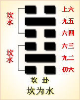

<!DOCTYPE html PUBLIC "-//W3C//DTD XHTML 1.0 Transitional//EN" "http://www.w3.org/TR/xhtml1/DTD/xhtml1-transitional.dtd">

<html xmlns="http://www.w3.org/1999/xhtml">
<head>
<meta content="text/html; charset=utf-8" http-equiv="Content-Type"/>
<title>周易第二十九卦：坎卦 坎为�?坎上坎下原文解释翻译-周易-国学�?/title>
<meta content="周易,习坎�?坎为�?坎上坎下" name="keywords"/>
<meta content="周易,习坎�?坎为�?坎上坎下，周易第二十九卦：坎�?坎为�?坎上坎下解释翻译�?（坎为水）坎上坎�?《习坎》：有孚维心，亨。行有尚�?初六，习坎，入于坎，窞，凶�?九二，坎有险，求小得�?六三，来之坎，坎险且枕，入于坎，窞，勿用�?六四，樽酒簋贰用" name="description"/>
<link href="css.css" media="screen" rel="stylesheet" type="text/css"/>
</head>
<body>
<div class="gxlayout">
</div>
<div class="gxlayout">
<div class="ihead">
<div class="title"><a>周易</a></div>
<ul class="more fl">
<li>当前位置:<a>国学梦首�?/a> &gt; <a>国学经典</a> &gt; <a>经部</a> &gt; <a>四书五经</a> &gt; <a>周易</a> &gt;  周易第二十九卦：坎卦 坎为�?坎上坎下原文解释翻译</li>
</ul>
</div>
<div class="gxbl fl">
<div class="latitle">

<h1>周易第二十九卦：坎卦 坎为�?坎上坎下</h1>
<div class="lainfo"><span>作者：佚名</span> <span>全集�?a>周易</a></span> <span>来源：网�?/span> <span>[<a rel="nofollow" target="_blank">挑错/完善</a>]</span></div>
</div>
<div class="lacontent">
<div class="clearfix"></div>
<!--<!-- allowfullscreen="" frameborder="0" height="36" src="http://www.ximalaya.com/swf/sound/yellow.swf?id=1382592&amp;auto=true" width="260"></iframe>-->
<p style="text-align:center"></p>
<p style="text-align:center"><a>周易第二十九卦详�?/a></p>
<p style="text-align:center"><a>第二十九卦初六爻详解</a>　<a>第二十九卦九二爻详解</a>　<a>第二十九卦六三爻详解</a></p>
<p style="text-align:center"><a>第二十九卦六四爻详解</a>　<a>第二十九卦九五爻详解</a>　<a>第二十九卦上六爻详解</a></p>
<p><strong><a target="_blank">周易</a>第二十九�?�?坎为�?坎上坎下</strong></p>
<p>坎：习坎，有孚，维心，亨，行有尚�?/p>
<p>彖曰：习坎，重险也。水流而不盈，行险而不失其信。维心亨，乃以刚中也。行有尚，往有功也。天险不可升也，地险山川丘陵也，王公设险以守其国，坎之时用大矣哉!</p>
<p>象曰：水洊至，习�?君子以常德行，习教事�?/p>
<p>初六：习坎，入于坎窞，凶。象曰：习坎入坎，失道凶也�?/p>
<p>九二：坎有险，求小得。象曰：求小得，未出中也�?/p>
<p>六三：来之坎坎，险且枕，入于坎窞，勿用。象曰：来之坎坎，终无功也�?/p>
<p>六四：樽酒簋贰，用缶，纳约自牖，终无咎。象曰：樽酒簋贰，刚柔际也�?/p>
<p>九五：坎不盈，只既平，无咎。象曰：坎不盈，中未大也�?/p>
<p>上六：用徽繹，置于丛棘，三岁不得，凶。象曰：上六失道，凶三岁也�?/p>
<p><strong><a href="29_坎卦.html" target="_blank">坎卦</a>卦象，坎为水卦的象征意义</strong></p>
<p>坎为水，�?a target="_blank">易经</a>》中坎卦的符号为“”。这个符号的产生，是由于古人观望滔滔的江河，见中流强劲有力，像射出的箭一样，并向两边撞开一道道或缓或急的波汶和水流，于是以“一”象征中流，以“一”象征涌向两边的支流或波纹，合在一起，便形成了“”这一符号，以象征水�?/p>
<p>坎卦除了象征水之外，还代表着<a target="_blank">月亮</a>�?/p>
<p>坎卦所代表的人物在家庭为中男，中年男子;在社会为江湖之人、舟人、盗贼、匪徙，为数学家、医生、律师、逃亡者、黑社会之人、诈骗犯、劳务人员、酒鬼、娼妇、自来水公司人员�?/p>
<p>坎卦所代表的天气为雨、雷、露、霜�?/p>
<p>坎卦所代表的动物主猪、为鼠、为狐狸、水鸟、鱼类、水中动物、美脊之马、劳苦之马、脊椎动物�?/p>
<p>在静物为油、酒、醋、酱油、饮料、石油、药品、水车、轮子、刑具、蒺藜、丛刺、带核的果品、冷藏设备、浮萍、潜水艇�?/p>
<p>坎卦所代表的场所为江河、糊、海、沟、渠、井、泉、下水道、洼地、酒店、冷饮店、浴室、澡堂、水族馆、地下室、暗室、自来水公司、鱼塘、饮食店、妓院�?/p>
<p>坎卦所代表的时间为农历十一月，子年、月、日、时�?a target="_blank">冬至</a><a target="_blank">大寒</a>45天�?/p>
<p>坎卦所代表的颜色为黑色，或白色�?/p>
<p>坎卦所代表的人体部位为肾脏、膀胱、泌尿系统、生殖系统、血液、内分泌系统、耳、肛门�?/p>
<p>坎卦所代表的方位为北方，西方�?/p>
<p>在数字为一(九宫�?、六(<a target="_blank">五行</a>水数，一、六�?�?/p>
<p>坎卦所对应的五行之中水�?/p>
<p>坎卦所代表的味道为咸味�?/p>
<p>坎卦表示艰难、险阻的状态�?/p>
<p>六四十卦之中的坎卦，这个卦是两个坎卦相叠。坎为水、为险，两坎相重�?/p>
<p>险上加险，险阻重重。一阳陷二阴。所幸阴虚阳实，诚信可豁然贯通。虽险难重重，却方能显人性光彩�?/p>
<p>坎卦位于<a href="28_大过�?html" target="_blank">大过�?/a>之后，《序卦》之中说道：“物不可以终过，故受之以坎�?/p>
<p>坎者，陷也。”大过卦有行动过当之意，如果行动过当，就会陷入危险之中，所以接下来谈坎卦�?/p>
<p>《象》中这样解释坎卦：水洧至，习�?君子以常德行，习教事�?/p>
<p>《象》中指出：坎卦的卦象是坎(�?下坎(�?上，为水流之表象。流水相继而至、潮涌而来，必须充满前方无数极深的陷坑才能继续向前，所以象征重重的艰险困难;君子因此应当坚持不懈地努力，反复不间断地推进教育事业�?/p>
<p>坎卦启示了行险用险的道理，属于下下卦。《象》中这样来断此卦：一轮明月照水中，只见影儿不见踪，愚夫当财下去取，摸来摸去一场空�?/p>
<p>此卦名为坎。《说文》中说：“坎，陷也。”可见坎的本义是指坑与穴。但是这种地方正是水的居留之地，“水就下，处卑下之地”，所以坎也代表水。事物不可能永远是顺利地得以通过，总会有坎坷阻挡，所以大过之后便是坎卦。这就是《序卦传》中所说的：“物不可以终过，故受之以坎”。正因为这样，坎卦也含义险阻的含义�?/p>
<p>�?a target="_blank">�?/a>：坎卦的卦画是四个阴爻两个阳爻，两个阳爻分别位于上下卦之中�?/p>
<p>卦象：从卦象上分析，坎卦是两个三爻坎卦重叠而成，象征一个陷阱接着一个陷阱，一个险阻接着一个险阻，一个险难接着一个险难，大水泛滥，灾难重重，缕遭坎坷。上卦的坎可代表天上的水，即雨、露、霜、雪、云、雾等，也代表外面来的灾�?下卦的坎可代表地中的水，即河、海、泉、湖、泊等，也代表内部引发的灾难。总之坎卦是内忧外患，险难不绝�?/p>
<p>关键词：周易,习坎�?坎为�?坎上坎下</p>
<div class="clearfix"></div>
<div class="title"><div class="thot">解释翻译</div><span>[挑错/完善]</span></div><p>�?a href="29_坎卦.html" target="_blank">坎卦</a>：抓到俘虏。用好话劝说他们，亨通。路途中遇到帮助�?/p>
<p>初六：坎坑重坎坑，陷入重坑之中。凶险�?/p>
<p>九二：坎坑有危险，为了小收获只得冒险�?/p>
<p>六三：来到坎坑，坎坑又险又深。陷入重坑之中，非常不利�?/p>
<p>六四：用陶樽陶簋装酒饭，关在坎窖中的俘虏从窗户拿进送出。结果没有危险�?/p>
<p>九五：坎坑没有被填满，小山丘被挖平了。没有灾祸�?/p>
<p>上六：用绳索把犯人捆住，关进四周有丛棘的监狱中，多年还不能使犯人屈服。凶险�?/p>
<div class="title"><div class="thot">注释出处</div><span>[请记住我�?国学�?www.guoxuemeng.com]</span></div><p>①本卦的标题是坎。习坎的意思是重坎，是说卦象为两个坎卦相叠加。标题省去习字是为了方便称呼。坎的意思是坑，陷阱。全卦内容主要讲从渔猎时代到农业时代的社会发展变化，用多见词“习坎”作标题�?/p>
<p>②尚：帮 助�?/p>
<p>③窞(dan)：双重坎坑�?/p>
<p>④之：至，到达�?/p>
<p>⑤枕:用作 “沈”，意思是深�?/p>
<p>(6)樽：装酒的器皿。簋(gui)：装饭的器皿。簋贰：两碗饭�?/p>
<p>(7)缶：陶制的器皿。约：取。牖(you)：窗户�?/p>
<p>(8)祗：应为 “坁’，意思是小山丘�?/p>
<p>(9)系：捆绑。徽�?mo)：绳索。三股叫徽，�?股叫纆�?/p>
<p>(10)丛棘：这里指监狱。古代监狱外面围上荆棘，以防犯人逃跑�?所以用“丛棘”代指监狱�?/p>
<div class="clearfix"></div>
<div class="contextdhall clearfix">
<ul>
<li>上一篇：<a href="28_大过�?html">周易第二十八卦：大过�?泽风大过 兑上巽下</a> </li>
<li>下一篇：<a href="30_离卦.html">周易第三十卦：离�?离为�?离上离下</a> </li>
<li>全   文�?a>周易</a></li>
</ul>
</div>
</div>
<div class="clearfix mt20"></div>
</div>
</div>
<div class="clearfix mt20"></div>
<div class="gxlayout">
</div>
<script>
var _hmt = _hmt || [];
(function() {
  var hm = document.createElement("script");
  hm.src = "https://hm.baidu.com/hm.js?872034ded637616c5cf8e173a446bb0e";
  var s = document.getElementsByTagName("script")[0];
  s.parentNode.insertBefore(hm, s);
})();
</script>
</body>
</html>
